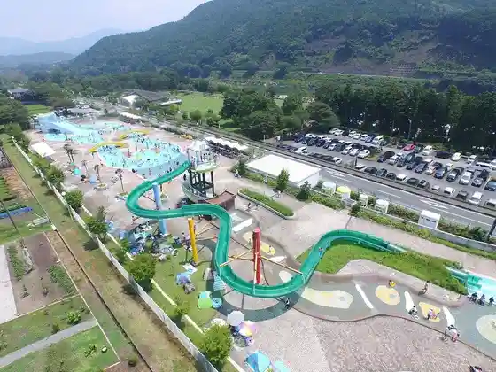
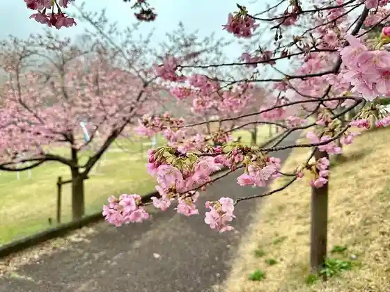
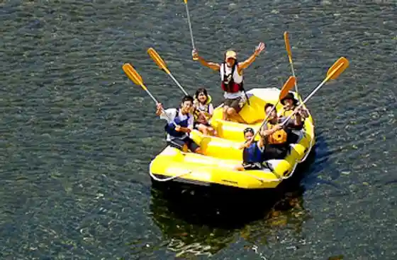
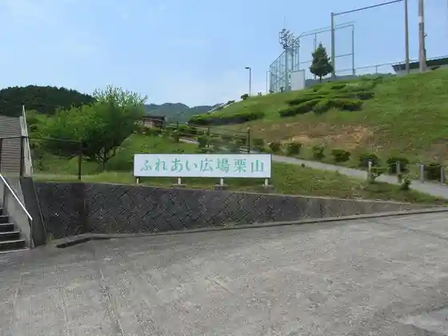

Miya Riba Watarai Park Yusui Puru Kagami
Watarai, Mie · 0596-63-0005 · Official / source link

Miya Riba Watarai Park
Watarai, Mie · 0596-62-2428 · Official / source link

Ise Miyagawa Famiriirafuteingu
Watarai, Mie · 090-5168-4219 · Official / source link

Fureai Hiroba Kuriyama
Watarai, Mie · 0596-62-2422 · Official / source link

Watarai Furusato Rekishikan
Watarai, Mie · 0596-62-2422 · Official / source link
Renge Tera
Watarai, Mie · 0596-62-0868 · Official / source link
Shoboji
Watarai, Mie · 0596-62-2416 · Official / source link
Otome Iwa
Watarai, Mie · 0596-62-2416 · Official / source link
Kyu Gu Miyako Hime Shrine (Kugutsuhimejinja)
Watarai, Mie · 0596-62-2416 · Official / source link
Ushi Kusayama
Watarai, Mie · 0596-62-2416 · Official / source link
Kuni Soku Yama
Watarai, Mie · 0596-62-2416 · Official / source link
Kuni Soku Tera
Watarai, Mie · 0596-62-2416 · Official / source link
Shishigagaku
Watarai, Mie · 0596-62-2416 · Official / source link
Nansei Shin Shikoku Yasohachigatokoro
Watarai, Mie · 0596-62-2416 · Official / source link
Medaki
Watarai, Mie · 0596-62-2416 · Official / source link
Miyagawa Ichinose Kawa
Watarai, Mie · 0596-62-2416 · Official / source link
Nichi no Shutsu Forest
Watarai, Mie · 0596-62-2416 · Official / source link